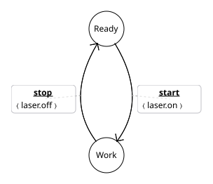
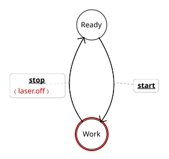
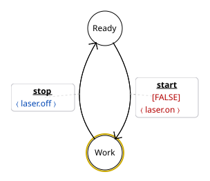

Test del workflow: pws_export svg dai tre .pws, referenziati come file esterni.

start emette ⟨laser.on⟩ e stop emette ⟨laser.off⟩ — entrambe fireable, in nero. Report pulito. Fonte: pws-examples/laserCover-base.pws
start è svuotata, quindi Work raggiunge (Closed, Off) violando Sem = (Closed, On) (rosso); stop’s ⟨laser.off⟩ diventa azione orfana (rosso). Fonte: pws-examples/laserCover-R6-orphan-action.pws
start è guardata [FALSE], quindi Work è non raggiungibile (oro); stop’s ⟨laser.off⟩ è validata solo su Sem e resa blu (provvisoria); start’s ⟨laser.on⟩ è orfana. Fonte: pws-examples/laserCover-R6-unreachable-provisional.pws